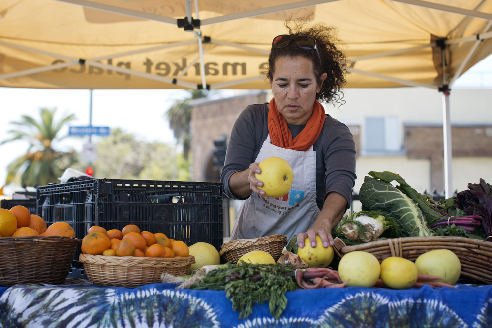
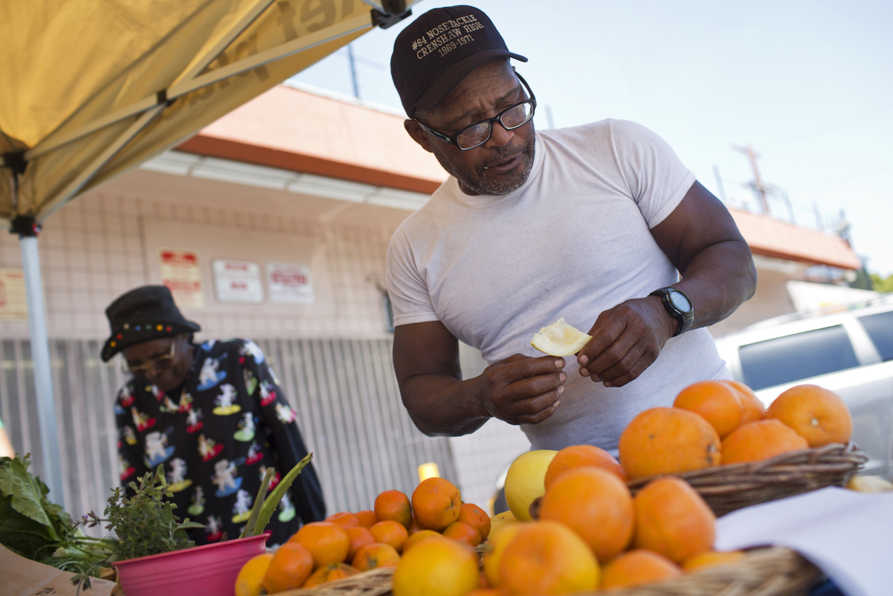
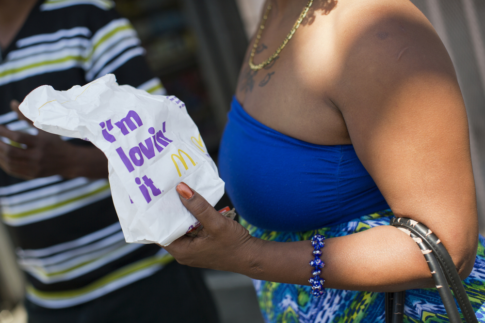

Mary Muñoz, left, and her daughter, Melanie, smell fresh herbs grown at one of Community Services Unlimited's five mini-urban farm sites. Photo by Maya Sugarman for KPCC.
Each Friday afternoon, the corner of Western Avenue and 39th Street in South L.A. gets a little brighter. Just before 2 o’clock, Rosario Mireles pulls up in a utility truck, unloads crates of organic fruit and vegetables, and sets up a produce stand in the parking lot of a liquor store where addicts used to loiter.
The produce stand popped up not long after a nearby Ralph’s grocery store shut down in 2013, leaving only a Food 4 Less in the area, where neighbors say quality can be hit and miss. It’s one of a constellation of small efforts that nonprofits have launched to increase access to fresh produce across South L.A., where options are limited. They’ve included farmer’s markets, community and school gardens, and corner store conversions.
Rosario Mireles staffs the produce stands run by Community Services Unlimited, a non-profit in South Los Angeles. Photo by Maya Sugarman for KPCC.
But despite those efforts, the area is not becoming a bastion of healthy eating.
The need to change South L.A.’s relationship with food is clear. A recent study by the RAND Corporation found that obesity rates are increasing much faster in South L.A. than in the rest of the city. In some parts of South L.A., 75 percent of residents were overweight or obese in 2012, compared with 56 percent in the rest of the city, the study found. It also found that a 2008 policy banning new fast food restaurants from opening in parts of South L.A. has done nothing to improve the obesity situation.
Nonprofit leaders were not surprised by the findings. They say the obesity epidemic is complex, and that solving it will require more than a ban on new fast food restaurants.
Photo by Maya Sugarman for KPCC.
Providing healthy alternatives is only the first step, says Neelam Sharma, director of the nonprofit Community Services Unlimited, which runs the produce stand. The more difficult part is getting people to adopt these alternatives, she adds - to change their own relationship with food.
"The answer is long-term, patient committed work," she says. "Like engaging with people. That isn’t sexy and doesn’t get immediate results."
A couple of hours at the produce stand on a recent Friday highlighted the scope of that challenge.
One young woman, Carol Mai, hesitates when Mireles asks her to sample a grapefruit as she walks out of the liquor store carrying a soda. She had never tried one.
"Is it like lima?" she asks, using the Spanish word for lime.
Lou Williams, a regular customer, samples a yellow grapefruit while buying tangerines at the Village Market Place produce stand on Friday, April 10, 2015. Photo by Maya Sugarman for KPCC.
Newlyweds Mary Whitmore and Shandalyn Rhodes swung by too. They buy produce here, and say there are lots of Carol Mai’s in South L.A.
"Honestly, you’d be surprised at the amount of people that don’t know their vegetables, or don’t know what a squash is," Rhodes says.
At food giveaways in the neighborhood, people often leave vegetables behind because they don’t recognize or know how to cook them, she adds.
Whitmore is the more health-conscious member of the couple, and Rhodes says she struggles to eat well, admitting to a soft spot for McDonald's.
"If I’m hungry, there’s nothing else really available around here for us, except for maybe some frozen burritos," Rhodes says.
Whitmore and Rhodes say groups working on the food issue in South L.A. should focus on educating people about the benefits of different fruits and vegetables.
Sharma of Community Services Unlimited says that is part of her group’s work. In workshops, it teaches people about the "food heritage" of Latino and African-American communities, and encourages people to embrace foods that their ancestors ate. It runs five "urban farms," gardens where volunteers grow produce to be sold at produce stands across South L.A.
It’s also partnered with other groups, like the nonprofit Community Coalition, which played a key role in establishing the produce stand outside the liquor store by addressing safety issues that would have made siting it there impossible.
Several years ago, Community Coalition organized residents to pressure the owner of the liquor store to hire a security guard and make other improvements. As the drug addicts who lingered out front stopped coming around, neighbors started to feel safer walking by, says the coalition’s Joanne Kim.
Eventually, the idea of the produce stand came up. Some neighbors had doubts.
Shandalyn Rhodes holds a bag from McDonald's outside a corner store and one of Community Services Unlimited's produce stands. Rhodes likes fast food, while her her wife does not. Photo by Maya Sugarman for KPCC.
"They’d be like, why are you going to put it on that corner? Nobody’s going to go to that corner," Kim recalls. "And some of the neighbors were like, we can change that corner by putting a produce stand [there]."
The corner is changing gradually, she says.
Sales at the produce stand are slower than at three other locations where Community Services Unlimited sets the stand up throughout the week.
Attracting customers is an ongoing project, says Sharma.
Although the stand accepts food stamps, some neighbors, like retiree Norma Patten, are turned off by the prices.
"I can’t afford it," she says. "You could pay up to 50 or 60 cents for one banana. And you go to Grand Central Market downtown, you can get a banana for maybe 10 cents when they’re real ripe."
Mary Muñoz is a regular customer, though. She spends $16 on a bagful of organic produce, including berries for her daughter, Melanie.
"I try to get my daughter to eat well," she says. "But it’s hard because we don’t have too many options. So this is a really good option."
This story also appeared in KPCC.